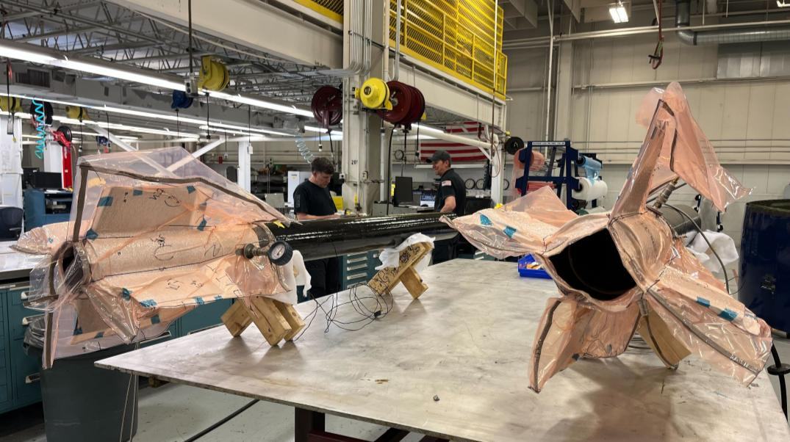
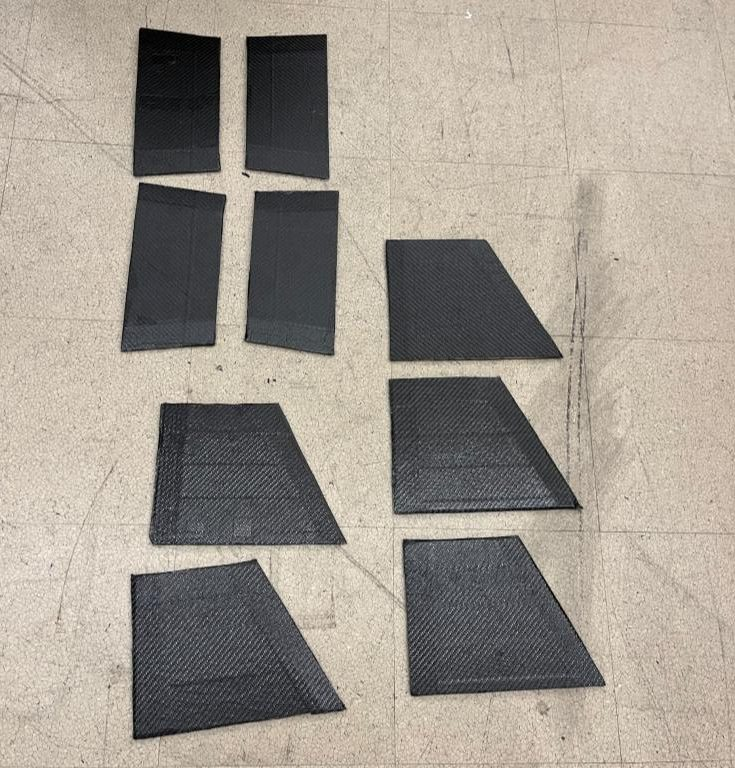

01 / GTXR · Design & composites
Fin design &
thermoforming
Selecting a fin concept meant considering what could be analyzed and manufactured together.
- Design
- Led a structured trade study across materials, geometries, and manufacturing constraints. Down-selected concepts using analytical feasibility, machinability, and engineering first principles.
- Build
- Co-developed and evaluated a thermoforming process for double-wedge PMI foam cores using CNC-machined aluminum tooling.
- Verify
- Used 3D metrology to evaluate the formed geometry.
0.28 mm
Average global geometric error

